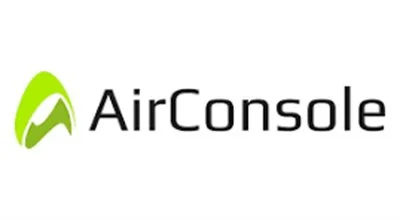
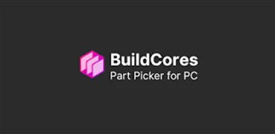

Besplatni Alati za Zabavu i Igre u Pregledniku 2026
Tražite besplatne alate za online zabavu i igre u pregledniku koji ne zahtijevaju preuzimanje ili pretplatu? Na pravom ste mjestu. Od multiplayer igara u pregledniku i streaminga klasičnih animea do simulatora leta i vodiča za gradnju PC-a — ovo su sve besplatni alati za zabavu u 2026. koje je WebAlati tim pregledao i kurirano za sve koji žele vrhunsku zabavu bez troškova.
Neki linkovi na ovoj stranici su affiliate linkovi. Možemo zaraditi proviziju bez dodatnih troškova za vas. Pravila →

AirConsole
FreemiumMultiplayer gaming platforma u pregledniku gdje pametni telefoni postaju kontroleri. Igrajte party igre s prijateljima odmah — bez hardvera, bez preuzimanja. Savršeno za grupnu zabavu.
Igraj AirConsole →
RetroCrush
BesplatnoBesplatna streaming platforma posvećena klasičnom animeu i retro animiranim serijama iz prošlih desetljeća. Gledajte nostalgične naslove iz 70-ih, 80-ih i 90-ih bez pretplate.
Gledaj RetroCrush →
BuildCores
BesplatnoBesplatni alat za gradnju i usporedbu PC-a. Sklopite kompatibilne konfiguracije računala, usporedite cijene i dobijte smjernice za gaming ili radni PC — idealno za ljubitelje hardvera.
Isprobaj BuildCores →
GeoFS
BesplatnoSimulator leta u pregledniku koji koristi prave satelitske mape. Letite bilo kojim letjelicom iznad bilo kojeg mjesta na Zemlji — potpuno besplatno, bez instalacije. Idealno za ljubitelje avijacije.
Letite s GeoFS →
Secret Flix Codes
BesplatnoOtkrijte skrivene Netflix kategorije tajnim kodovima. Pronađite nišne žanrove koje standardni izbornik ne prikazuje — horror podžanrovi, međunarodni filmovi, kultni klasici i još desetine skrivenih opcija.
Otključaj Netflix →Često Postavljana Pitanja – Alati za Zabavu
Koje su najbold besplatne browser igre u 2026.?
AirConsole je vodeći izbor za multiplayer igre u pregledniku — koristite telefon kao kontroler i igrajte s prijateljima odmah. GeoFS je popularni realistični simulator leta koji radi u cijelo pregledniku.
Gdje mogu besplatno gledati klasični anime?
RetroCrush je potpuno besplatna streaming platforma posvećena klasičnom animeu i retro crtanim filmovima iz 70-ih, 80-ih i 90-ih. Nije potrebna pretplata ni račun za gledanje.
Kako pronaći skrivene Netflix kategorije?
Secret Flix Codes je besplatni alat koji otkriva tajne Netflix žanrovske kodove. Samo unesite kod u Netflix URL i pristupite desetinama skrivenih kategorija koje se ne pojavljuju u standardnoj navigaciji.
Koje su najboli besplatne streaming platforme u 2026.?
RetroCrush nudi besplatan klasični anime i retro crtane filmove bez pretplate. Za opću zabavu, Pluto TV pruža besplatnu live TV i filmove na zahtjev. Većina besplatnih platformi financira se oglasima, što ih čini stvarno besplatnima bez potrebe za registracijom. Idealne su za povremeno gledanje, a ne za binge-watching premium serija.
Mogu li igrati igre na telefonu bez preuzimanja aplikacija?
Da — AirConsole je najbol opcija za mobilne igre u pregledniku. Idite na AirConsole.com na TV-u ili računalu, zatim koristite pametni telefon kao kontroler — bez potrebe za aplikacijom na telefonu. GeoFS simulator leta također radi u potpunosti u mobilnom pregledniku. Većina browser igara zahtijeva samo moderni mobilni preglednik poput Chromea ili Safarija.
Neki linkovi na ovoj stranici su affiliate linkovi. Možemo zaraditi proviziju bez dodatnih troškova za vas. Pravila →